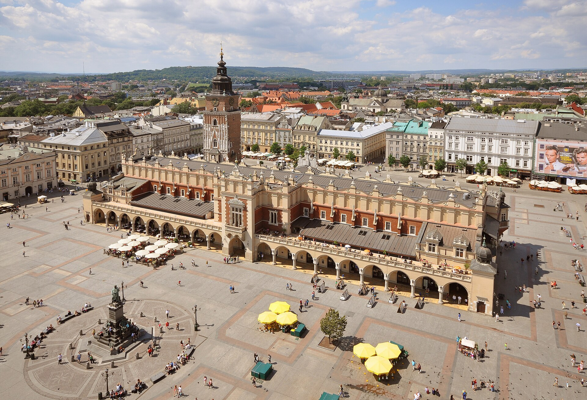
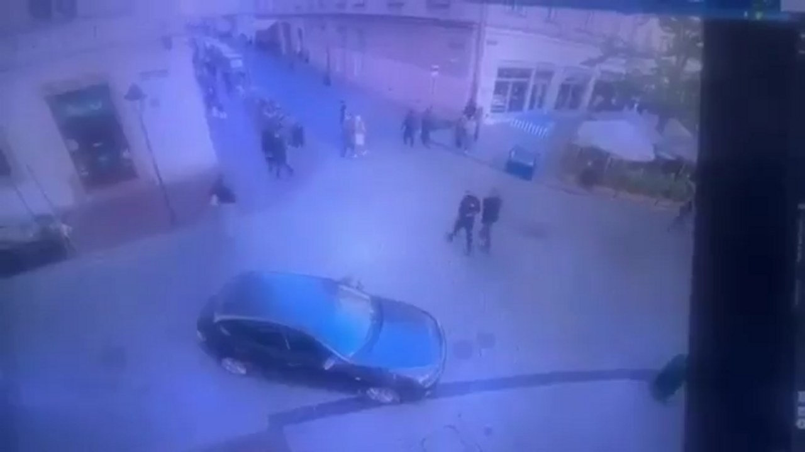
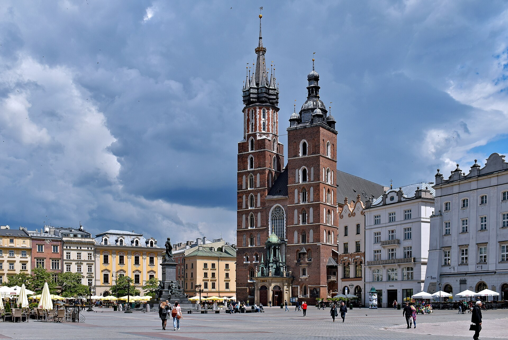
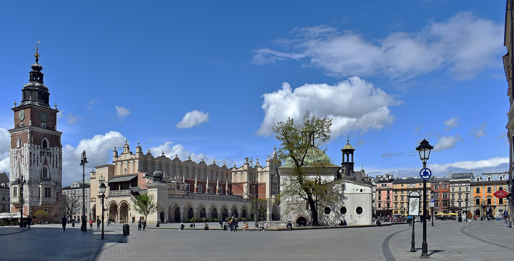

RYNEK GŁÓWNY, KRAKÓW
Foto: Jorge Lascar · CC BY 2.0

CCTV
Kereta suspek masuk ke dataran
Rakaman CCTV · via cedarnews.net / Wikimedia Commons

Gereja St. Mary, Rynek Główny
Foto: Zygmunt Put · CC BY-SA 4.0

Dataran Rynek pada hari biasa
Foto: Zygmunt Put · CC BY-SA 4.0
KRAKÓW · RYNEK GŁÓWNY · 7.11.2026
Peta: © OpenStreetMap contributors
FAIL SUSPEK
Umur20-an
BertindakSeorang diri
SenjataSah · permit sukan
FahamanEkstrem kanan (kata menteri)
StatusDitahan